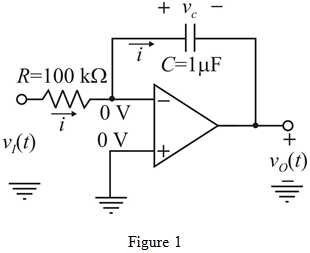

The time constant is 0.1 s. Thus,
Determine the value of capacitor from the equation.
Substitute for  in the equation.
in the equation.
Refer to Figure 2.24 (a) for the Miller integrator circuit in the textbook.
Write resistive and capacitive impedances in the s-domain.
And,
Assume that the input and output voltages are represented as and .
Apply the Kirchhoff’s current law at inverting terminal of the op-amp.
Thus, the transfer function of the circuit in the frequency domain is.
The time constant is 0.1 s. Thus,
Determine the value of capacitor from the equation.
Substitute for in the equation.
Redesign the Miller integrator circuit as shown in Figure 1.

At  , the voltage applied at input is and the voltage at the output at this moment is .
, the voltage applied at input is and the voltage at the output at this moment is .
Use the Ohm’s law and find the current  .
.
Calculate the equation for output voltage.
…… (1)
Substitute  for in equation (1).
for in equation (1).
Therefore, the time to reach output voltage zero is .
Substitute for in in equation (1).
Therefore, the time, to reach output voltage 10 V is .